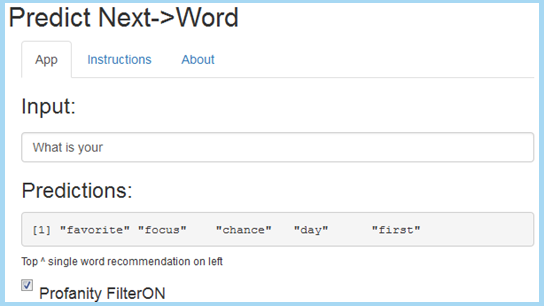
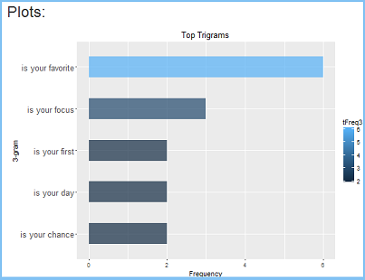

CAPSTONE PROJECT
predict next->word app
Richard R.
24 April 2016
Application Overview
- The "predict next->word" app can help reduce the amount of typing and typing errors on mobile devices.
- The app is based on N-Gram Language Models (LMs), where N is the number of words in a sequence.
- 1-gram, 2-gram, and 3-gram LMs were trained against the Capstone English dataset of the HC Corpora consisting of:
- Blogs posts
- News articles
- Twitter tweets
- The tokenization was based on the paper titled "Bigrams and Trigrams", by Mr. John Fry, Boise State University.
- The profanity filter uses the "bad word" list from www.FrontGateMedia.com.
- The spell checker is the Rasmus Baath's version of the Peter Norvig spell checker.
The Algorithm
- The probabilities were calcualted using General Linear Interpolation (GLI) defined as:
P(w3|w1 w2) = L1(h)*P3(w3|h) + L2(h)*P2(w2|h) + L3(h)*P1(w1|h)
- The GLI alogrithm is a combination of interpolation and "back-off" smoothing for unknown words. This makes lambdas conditional on the context (history - h) of previous lower order N-grams. This requires subsetting again to create a "held-out" set to train and find the lambdas(L1,L2,L3).
- The GLI used is based on the MIT Natural Language Processing Notes, page 19, Fall 2012.
- Grams (words) substited were:
- Unknown = <u> token (Out of Vocabulary:oov)
- Begining of sentence = <b> token
- End of sentence = <e> token
- Numbers = <n> token
- Profanity = <FilterON!> token
How it Functions
- It takes the last one, two ,or three words a user types/swipes/clicks in to search the LMs.
- It returns a word with the highest probability (on left) followed by four lower probability words. If the app cannot predict it defaults to the most common English word in the 1-gram LM, the word "the."
- The app works on any device with connectivity to Shinyapps.io.
INSTRUCTIONS
- INPUT: type english words and phrases into the first text box on top.
- OUTPUT: view predicted words in second text box. Check Profanity FilterON to toggle off.
Access:
How it Looks

